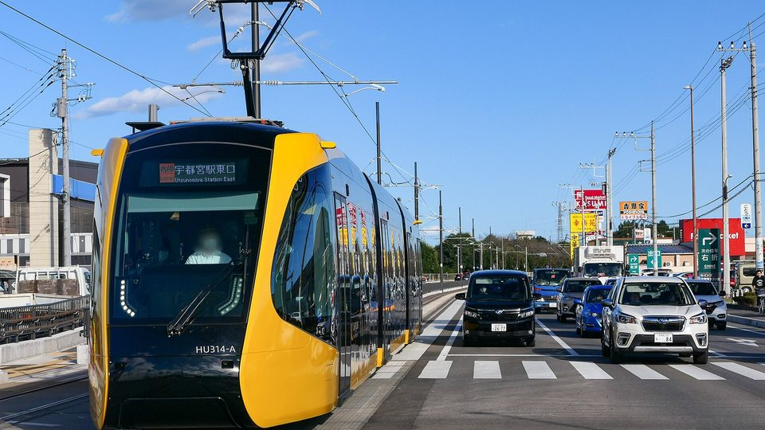
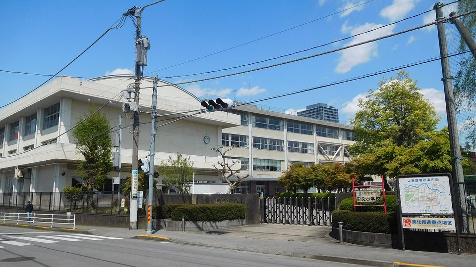
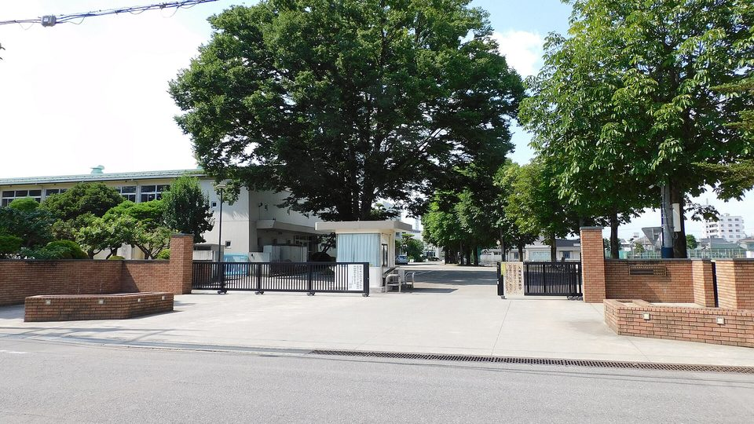
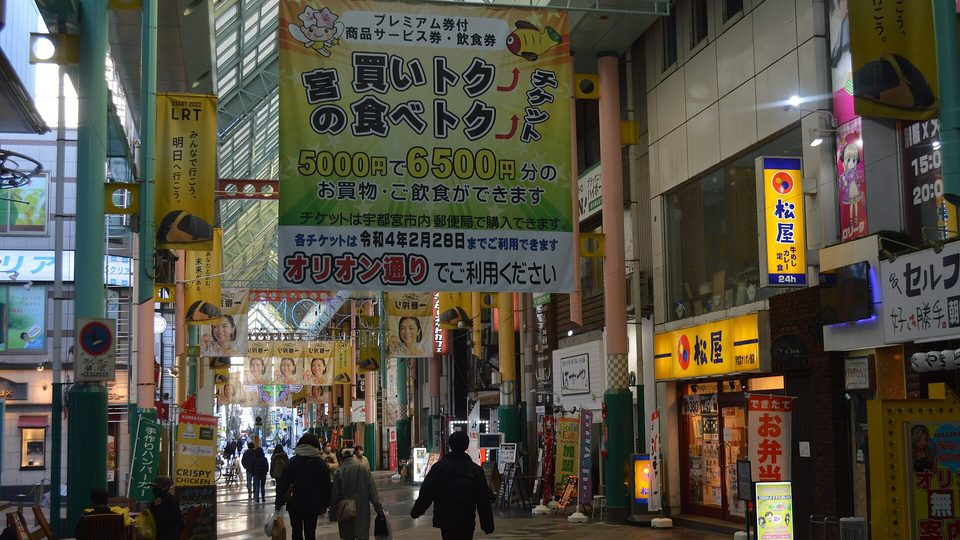
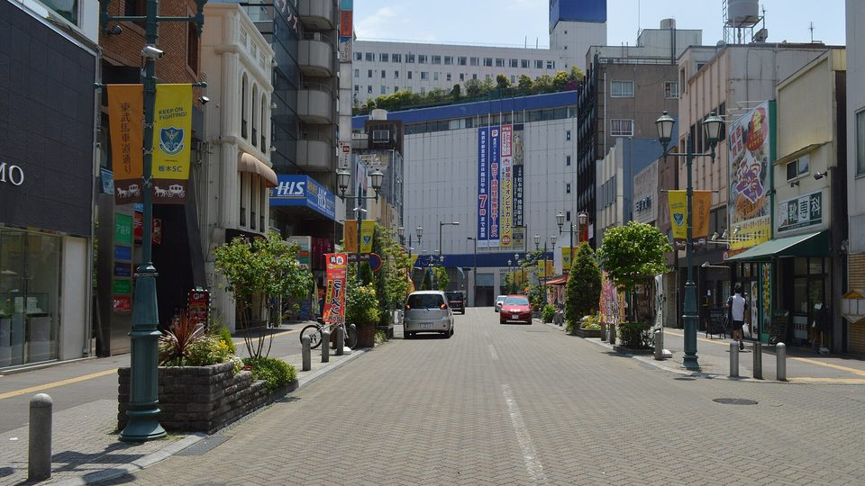
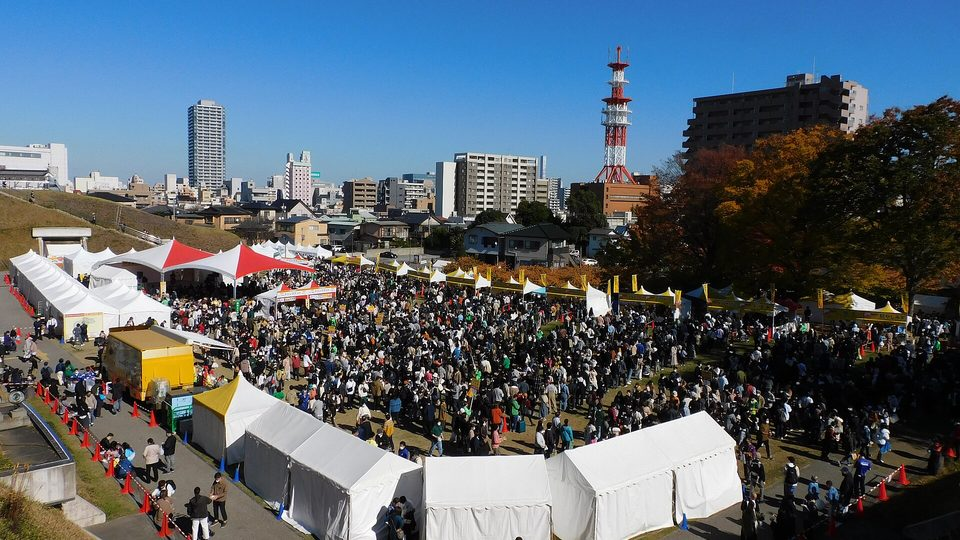
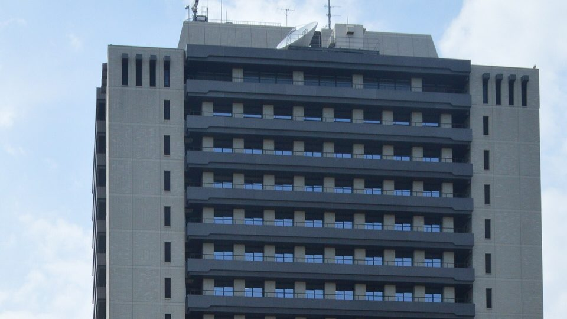
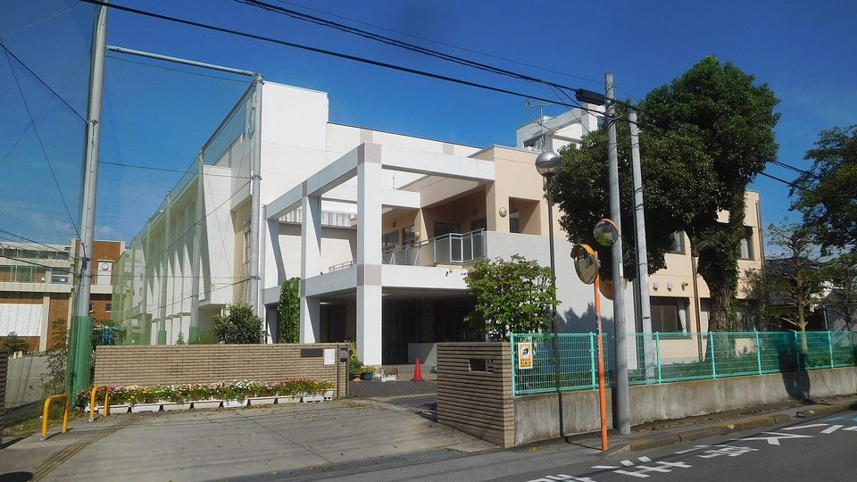
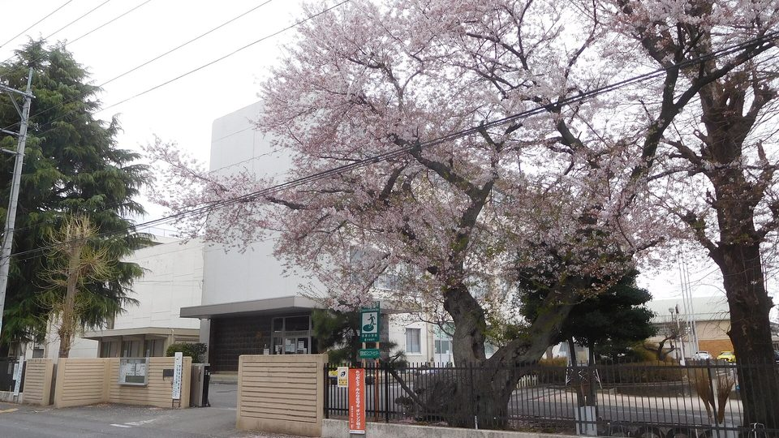

ともに変え、ともに守り、ともに生きる。
ひとりの声を、
まちのつながりへ。
子育て、教育、暮らし、地域のつながり…
あなたの声を大切に、
宇都宮のこれからを一緒に考えていきます。
暮らしの声から
こんなお悩み、
ありませんか？
子育て世代の“あるある”から、
地域の暮らしまで。
あなたの声を、まちの力に変えていきます。
-

宇都宮ライトライン 仕事と子育ての両立毎日、時間に追われている…→ -

市立中央小学校前 子どもの安全この道、本当に安全？→ -

宇都宮大学附属小・中学校 学校や子育ての悩み誰に相談すればいい？→ -

オリオン通り 暮らしの負担頑張っても余裕がない。→ -

馬車道通り 教育費・家計これからどうなる？→ -

宇都宮餃子祭り 地域のこと時間がなくて参加できない…→
※写真は宇都宮市内の風景です（クレジットはページ下部）。テーマは子育て世代の暮らしの悩みを想定したものです。
-

議会での活動宇都宮市役所 不登校やいじめに悩む
子どもと家庭を支えるために 代表質問で、不登校・いじめ問題への対策強化を求めました。2018年から繰り返し取り上げているテーマです。 詳しく見る→ -

政策・取り組み市立桜小学校 「生理の貧困」への支援が、
市の事業になりました 議会での質問・提言を経て、市が「つながりサポート女性支援事業」を開始。小中学校の保健室への生理用品配置も拡充されました。 詳しく見る→ -

活動報告西原地区 地域の声を、まちづくりへ。
「地域支え合い研究会」107回 2016年12月から毎月、地域の課題を学び合う研究会を開催。医療・福祉・子育ての現場の方を講師に招いています。 詳しく見る→
※回数は2026年10月時点。質問内容は宇都宮市議会の会議録、事業は宇都宮市の公表資料・本人の市政報告に基づきます（2026年10月29日更新）。
福田ちえが大切にしていること
誰もが、
居場所と出番のある
まちを創りたい。
自立とは、なんでも一人でできることではなく、
困った時に「助けて」と言えること。
「一人であるが孤独ではない」
誰もが居場所と出番のある、健康で生き生きと
安心して暮らせるまちを目指しています。
所属と公式情報
所属会派・SNS
福田ちえの所属と、公式の情報発信先です。
最新の情報は各リンク先でご確認ください。
所属
- 政党
- なし（無所属）
- 宇都宮市議会の会派
- 市民連合（会長）
- 議員歴
- 宇都宮市議会議員 5期（2007年初当選）
※会派は宇都宮市議会内の議員グループです。2026年11月時点の情報です。
公式SNS
※現在、公式として運用しているSNSのみ掲載しています。
30秒でわかる
動画で知る福田ちえ
字幕付きの短い動画です。音は出ません。
タップすると再生します。
-
この動画でわかること
- 宇都宮で育ち、3人の娘を育ててきたこと
- 学童保育やPTAの保護者としての地域活動
- 2007年の初当選から5期、市民連合の会長として
- 毎月の「地域支え合い研究会」（107回）
- めざすまち「誰もが、居場所と出番のあるまちへ。」
活動紹介・地域での取り組み・本人による政策説明の動画も、順次公開します。
お電話 028-636-2582 FAX 028-636-2559 メール info@f-chie.jp
いただいた個人情報は、ご相談への対応のみに使用します（プライバシーポリシー）。